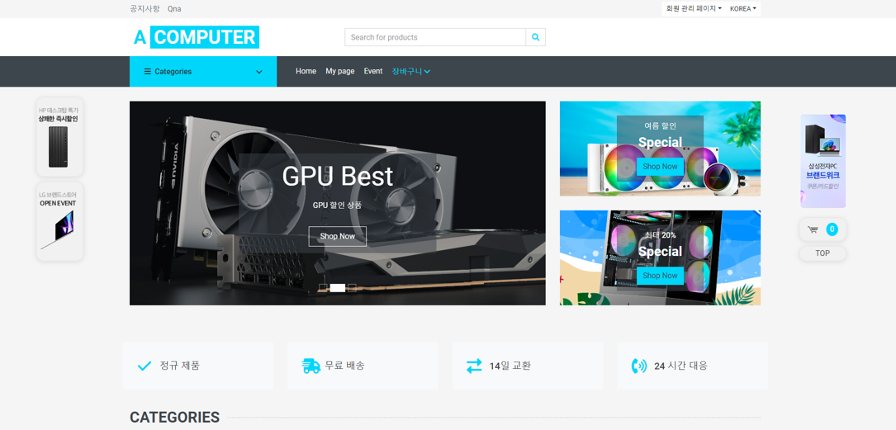

프로젝트 1 - 컴퓨터 부품 사이트
2024.06-2024.07
프로젝트 인원 : 3명
개요 : 스프링 부트를 활용한 사용자가 상품을 구매하고 관리자가 재고와 주문을 관리할 수 있는 사이트입니다.
기술 스택 : DBMS - H2 / 웹 Server - Apache Tomcat / 언어 - Java, JSP, JavaScript, HTML, CSS / IDE - SpringBoot / 협업 툴 - 공유폴더
주요 기능 : 회원가입, 로그인/로그아웃, 마이페이지, 게시판, 장바구니, 리뷰, 회원관리 및 상품 리스트 확인 & 상품 상세 정보 확인, 결제
담당 역할: 프론트 엔드
추가 내용 : 프론트 - 팀원과 각 페이지 프론트 담당 / 백엔드 - 사용자가 문의사항을 남길 수 있도록 게시판 구현

▶ 보다 직관적인 UI
사용자가 쉽고 빠르게 사이트를 이용할 수 있도록 직관적이고 쉬운 UI를 적용하여 시스템을 구현하였고 사용자의 만족도를 높혔습니다.
▶ 프로젝트 인원 : 3명
▶ 프로젝트 인원 : 3명